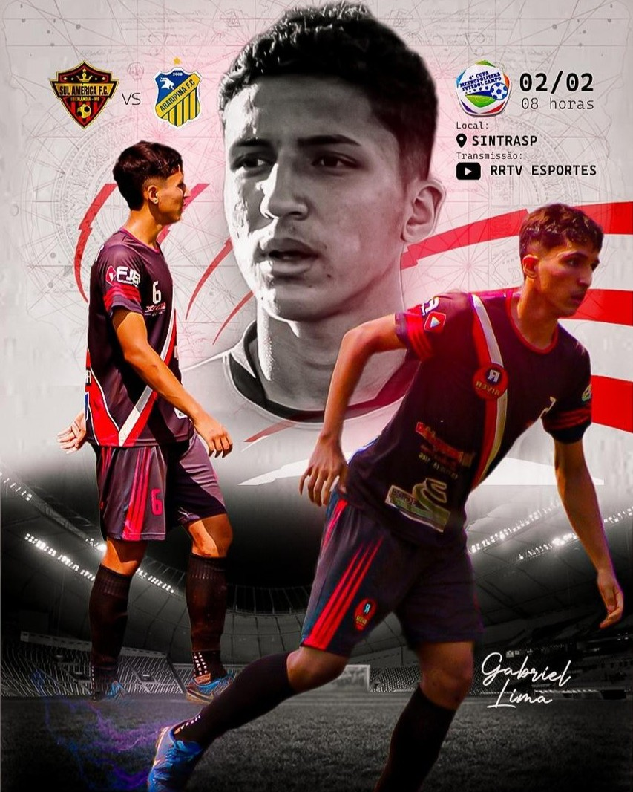
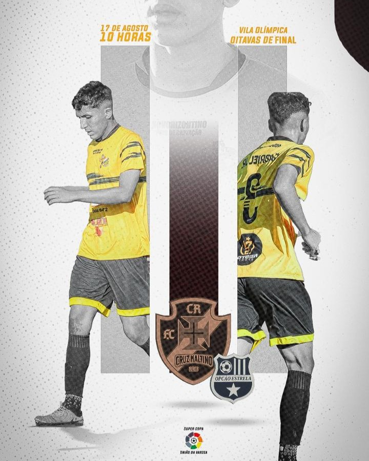
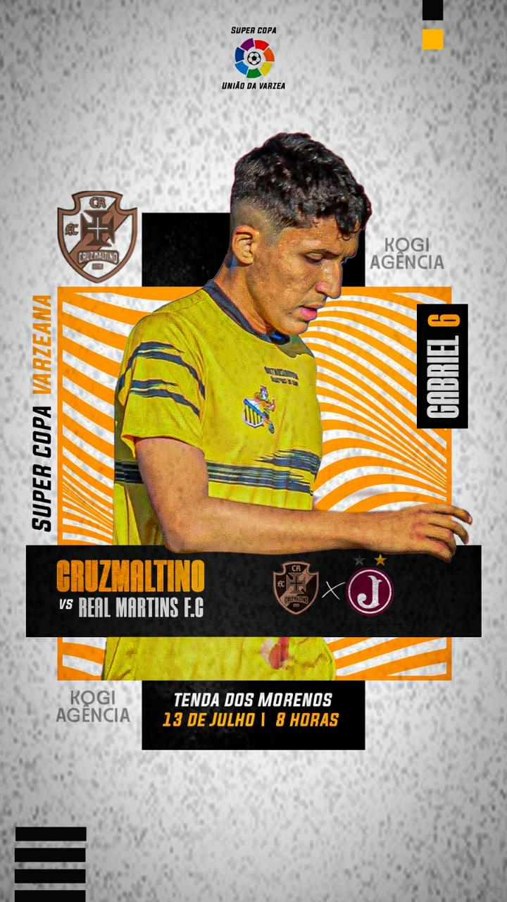
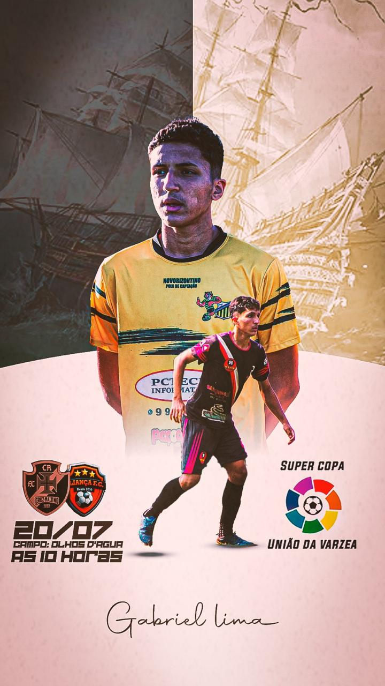
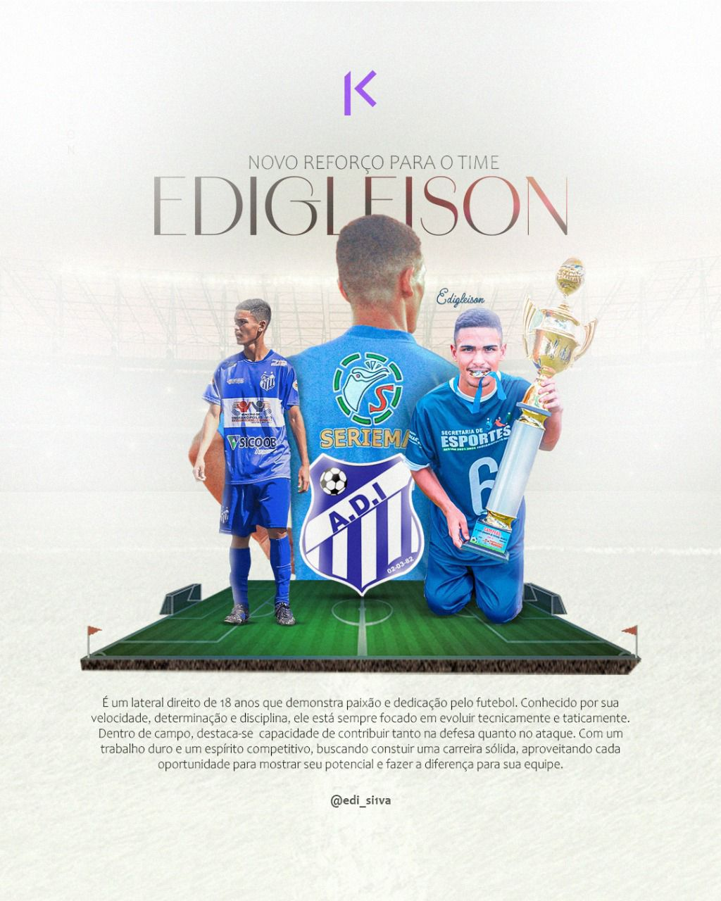
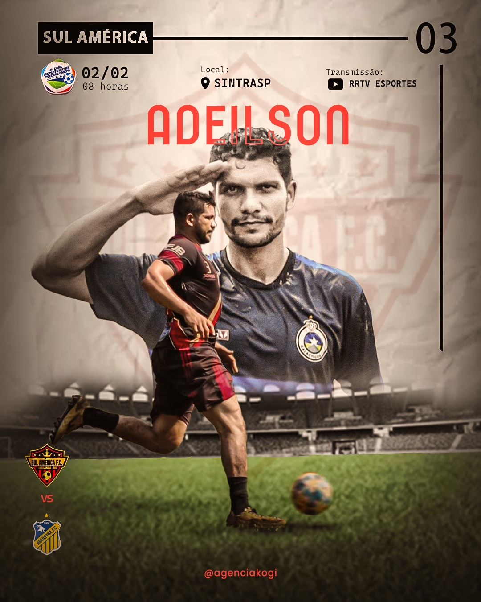

IDENTIDADE VISUAL
Elementos e sistemas visuais que tornam marcas reconhecíveis.
A Kogi Agência desenvolve comunicação visual para marcas que querem se destacar e se conectar com seu público.
VER TRABALHOS ↘
Em 2024, a antiga NewDesigner passou por um rebranding e se tornou Kogi Agência , com uma identidade mais moderna e um posicionamento mais claro.
A missão continua sendo criar design claro, criativo e estratégico, ajudando empresas a construir presença visual forte nas redes sociais.
Elementos e sistemas visuais que tornam marcas reconhecíveis.
Artes e conteúdos para fortalecer a presença digital de empresas.
Peças visuais para campanhas, divulgação e comunicação.






Seleção de peças presentes no acervo original do portfólio.
Conheça a Kogi e entre em contato pelo perfil oficial.
INSTAGRAM DA KOGI ↗